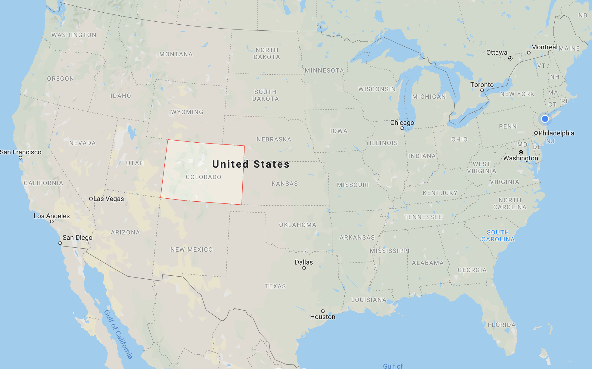
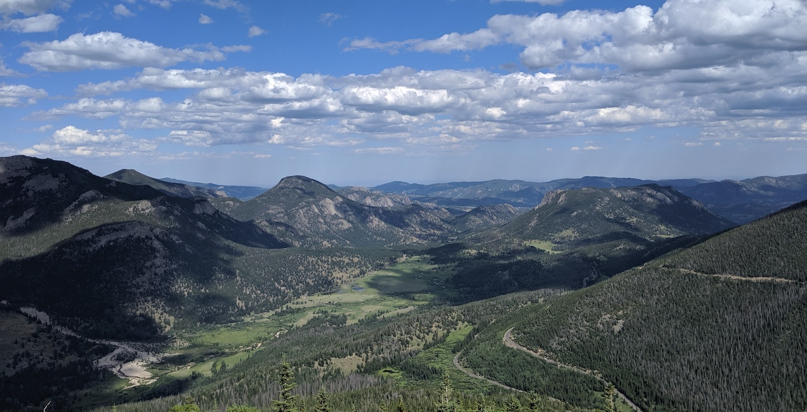
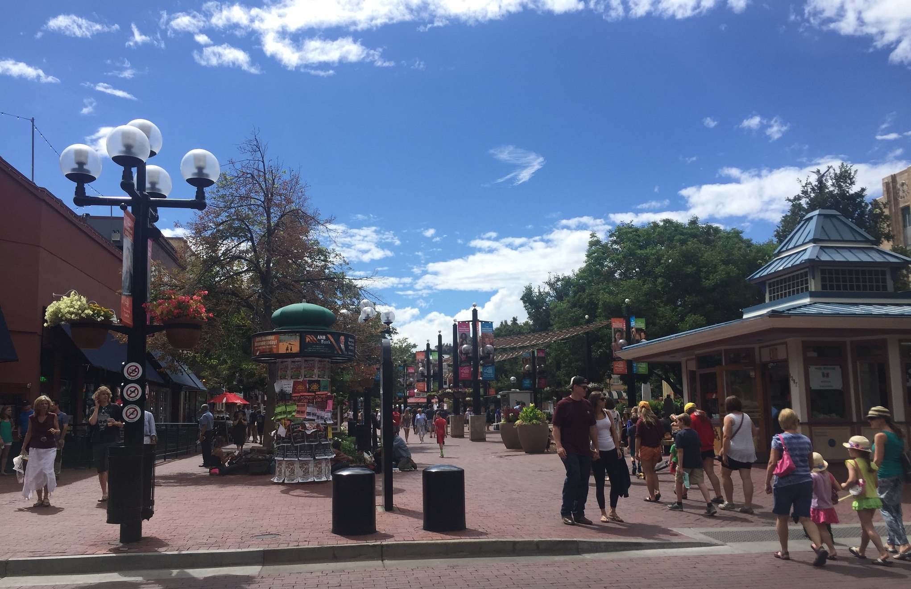
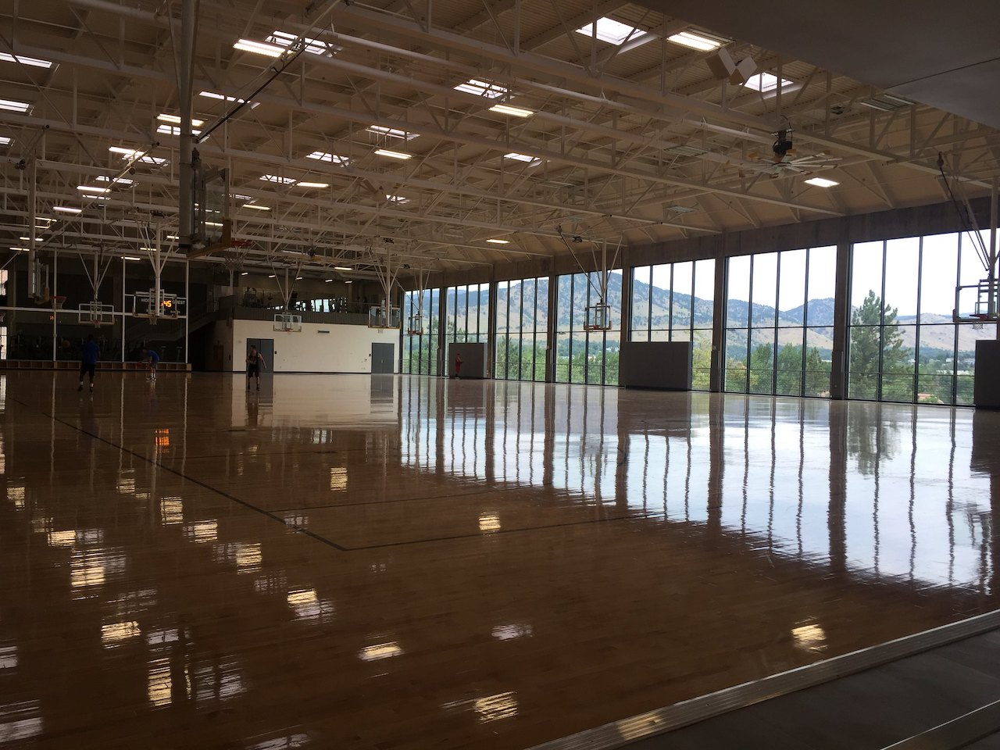
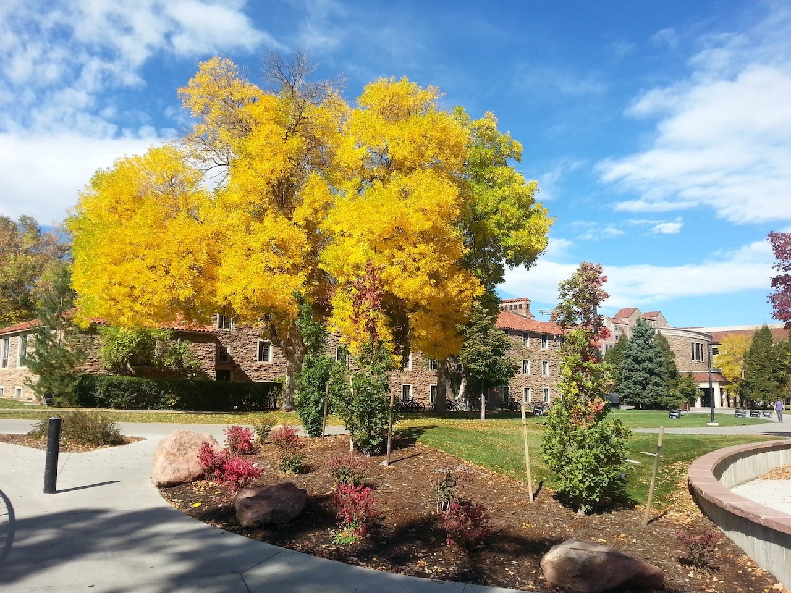

科羅拉多州 - Boulder
到美國不知不覺也三年了，決定紀錄一下生活，還有分享美國景點給大家，所以就從陪伴我兩年我最愛的Boulder開始吧！
科羅拉多州小科普
在申請學校之前我也沒聽過Colorado這個地方，中西部聽起來很荒涼讓人想到電影西部牛仔的場景…但是科州完全顛覆了我的想像，這裡絕對是世外桃源！
Colorado位於美國中西部，洛磯山脈貫穿西邊，是全美平均海拔最高的一州(2070m)，所以很多運動員會以這邊當作練習的地方，最大城市是Denver，有著名的Rocky Mountain National Park(RMNP)，球隊有NFL Broncos/ MLB Rockies/ NBA Nuggets，科州人夏天不外乎就是camping, hiking, bouldering, biking…冬天就是滑雪拉！oh還有科州是美國第一個大麻合法的州。 
RMNP 一隅 (之後再發一篇洛磯山國家公園的) 
Boulder
Boulder是科州的第三大城，座落在洛磯山脈山腳下，海拔有1655m，所以剛來的時候爬個三樓就好喘。我很喜歡Boulder的天氣，非常乾燥，很少下雨，食物都不會發霉哈哈，號稱一年365天有350天是晴天，夏天雖然很曬但都不太會流汗XD。Boulder不算是一個大學城，還有很多家庭住在這裡，居住環境治安都很好，很適合退休的養老生活。Downtown以一條Pearl Street為主，餐廳和商店聚集的地方，常常舉辦很多活動(eg.萬聖節遊行)

春天種滿鬱金香

夏天大家喜歡在這邊消磨時間，偶爾會有市集 
University of Colorado Boulder

學校簡稱CU, CU Boulder，每棟建築都長得很一致，紅色的屋頂讓學校很顯眼，整個很有科州感。吉祥物(Mascot)的名字是Ralphie，是一隻Buffalo，很酷的是學校真的有養一隻水牛，在重大場合例如football比賽，國慶日等等，Ralphie都會出來跑跑提振士氣。(下圖找亮點)

2016.8月正式入學University of Colorado Boulder的Computer Science就讀Master，抱著既期待又受傷害的心情在這裡度過了我的兩年美國校園生活，辛苦的求學生活就不多贅述了，分享一下學校照片！
陪伴我兩年的工學院，好幾個熬夜的日子，每天刷題的地方…

學校的物理，航太，大氣很有名，學校的物理系出了很多諾貝爾得主，在物理系管外面就有刻著獲獎者們的名字的石頭

神秘的學校北邊的美景(很少走到那邊哈哈)，有種英國感

學校的足球場和高級的健身房
看出去就是山的籃球場 
現在後悔唸書的時候沒榨乾這個健身房QQ
秋天的校園是我覺得最美的時候，葉子轉黃轉紅真的很漂亮！ 
冬天被大雪覆蓋的校園

Boulder真的是到目前為止我覺得住起來最舒服的地方了，離開科州後才懂的珍惜….等我回去吧Boulder!!!
千呼萬喚始出來的首po！